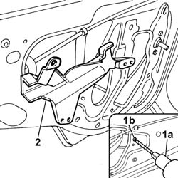

7010E93 partition on rear door, lh or rh - r r with door panel removed
- Path
- Procedures > 70 FITTINGS > 7010 PASSENGER COMPARTMENT REAR SIDE DOORS > 7010E rear side door trim > 7010E93 partition on rear door, lh or rh - r r with door panel removed
- Kind
- repair procedure (removal / refitting; the operation number is the code)
- Applies to
- all engines; all production periods
- Interactive page
- https://sloeber94.github.io/elrnDB-fPnd/en/#/2753112
Applies to: all engines; all production periods
 Removing
Removing
 Refitting
RefittingDisconnect the battery negative terminal.
5570T93 REAR SIDE LOUDSPEAKER. (one), left or right - R.R. with rear door panel or wing. removed
7010A05 rear side door water guard protection-r r or arrange
1. Remove the fixing rivets (1b) using a drill fitted with a suitable bit (1a).
2. Remove the anti-intrusion panel.

Applies to: all engines; all production periods
Refitting
RemovingPlace the anti-intrusion panel in position and secure it using suitable size new rivets.
7010A05 rear side door water guard protection-r r or arrange
5570T93 REAR SIDE LOUDSPEAKER. (one), left or right - R.R. with rear door panel or wing. removed
Connect the battery negative terminal.
Topics linked from this page (2)
- 5570T93 REAR SIDE LOUDSPEAKER. (one), left or right - R.R. with rear door panel or wing. removed
- 7010A05 rear side door water guard protection-r r or arrange
Topics that link to this page (12)
- 5505B20 rear door wiring - r r
- 5505B21 rear door wiring - r r
- 7010C10 rear door outer handle - r r with door panel removed
- 7010C11 rear side door outside handle-r r
- 7010C64 handle link yo lock - r r
- 7010C65 handle link to lock - r r
- 7010D14 rear side door descending window glass - r r with door panel (and mount frame) removed
- 7010D15 rear side door descending window glass-r r
- 7010D23 rear side door descending window glass guide one-r r
- 7010N20 rear side door lock motor/catch assembly - r r with door panel and support frame removed
- 7010N21 rear side door lock motor-lock assembly r r
- 7205E38 Stripping REAR SIDE DOOR